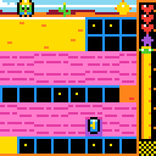

Alternative preview draft, not submitted
Acquiring Capacity, Respecting Constraints: Lessons from ARC-AGI-3
Abstract
Budd and Scarfe argue that creativity requires more than recombining familiar forms: a contribution must respect the constraints that give its domain meaning. Chollet distinguishes accomplished skill from the efficiency with which new skills are acquired. We bring these perspectives together through two parts of our ARC-AGI-3 work: developing a game-playing agent and making synthetic games. AI assistance expanded the unfamiliar work we could undertake, but producing a working artifact did not establish that we understood its purpose. Our game-design failures make that distinction concrete. We identify a practical evaluation gap: verifying that a solution exists is not the same as verifying that a task elicits the intended learning. Human–AI collaboration must address both.
From skill to skill acquisition
In Why Creativity Cannot Be Interpolated, Jeremy Budd and Tim Scarfe distinguish novelty from creativity [1]. They use interpolation in a broader sense than its mathematical definition: recombination within an existing conceptual structure. On their account, a creative contribution does not merely resemble earlier work. It respects the domain’s constraints well enough to extend what can be done within it. Slop is the corresponding failure: apparent novelty without the understanding needed to make it coherent.
François Chollet’s On the Measure of Intelligence makes a related distinction between possessing skills and acquiring them. Intelligence is “the rate at which a learner turns its experience and priors into new skills at valuable tasks that involve uncertainty and adaptation” [2]. An accomplished performance is therefore not, by itself, an explanation of the process that produced it. Budd and Scarfe express the requirement as “the capacity to acquire capacity.”
These ideas concern the humans developing AI systems as well as the systems themselves. We entered ARC-AGI-3 without professional backgrounds as data scientists or AI engineers. AI assistance enabled us to participate in unfamiliar technical work before we could independently implement every part of it. This was a practical expansion of capacity, but it raised a question: when does access to an implementation become an acquired skill, rather than access to someone else’s answer?
Learning through work
Our competition entry developed from the public work of Tufa Labs and Daniel Franzen, with substantial contributions from our teammates [3]. Shared implementations and explanations let us begin from a functioning system. AI assistance shortened the path from an unfamiliar proposal to something we could inspect and test. We could acquire knowledge while investigating a concrete problem, rather than waiting to master the field before participating.
What mattered was not simply that we could produce more code. We became able to organize comparisons, investigate failures, and question whether an apparent improvement was meaningful. Our team’s local evaluation used repeated runs and controls. When results that looked promising locally did not carry over to competition submissions, the disagreement exposed limits in our methods. We had to distinguish variation from improvement, and the conditions our tests reproduced from those they omitted [3].
That development was collaborative, not evidence that every member independently mastered every component. It nevertheless illustrates a different route into technical practice: beginning with capabilities supplied by a community and its tools, then acquiring the understanding needed to make increasingly informed interventions. The team’s record of unsuccessful changes matters here alongside its successful entry. Being able to attempt a technique, explain why it should help, and demonstrate that it helps are distinct accomplishments.
The agent presents another version of this distinction. ARC-AGI-3 asks a player to discover goals and rules in unfamiliar interactive environments [4]. Our entry uses a model with fixed weights inside software that presents observations and preserves its working context. The model proposes rules, writes code, observes consequences, and builds functions it can reuse within a game. Fixed weights do not mean an absence of learning: new task-specific capabilities can be expressed through context and executable code.
Our entry does not carry that working library from one game into the next. This is a property of our implementation, not proof that language models cannot retain or transfer knowledge. It points to a question for future work: which acquired abstractions would help on unfamiliar games, and how could we preserve them without importing misleading assumptions? For both people and agents, the relevant issue is what experience changes about the next attempt.
Making the problem
Synthetic game design exposed the limits of expanded production capacity more directly. Instead of asking whether an agent could solve an unfamiliar game, we asked whether we could make a good unfamiliar game for it to solve. Our brief was easy for humans, hard for AI, and fun. Fun was our additional design commitment, not an assertion that the official benchmark measures enjoyment.
A generated game could run, contain levels, and have a winning sequence while failing that brief. An internal review of our earlier designs identified hidden timing, distinctions that the image did not adequately express, and elaborate presentations concealing shallow problems [5]. A solver could confirm that a winning sequence existed without establishing that a person could discover the rules from play.
Tethered Extraction provided a concrete example. Its cable mechanics depended on continuous geometry, while the small image presented a rounded view. The implementation distinguished positions that the player could not readily distinguish on screen. The problem was not a lack of machinery. It was a mismatch between the information needed for a decision and the information available to the person making it.
Other designs detected unwinnable positions and ended play immediately. Such a feature can appear helpful: it prevents a player wasting time. But it also supplies an immediate judgment about a move that the player might otherwise need to infer from later consequences. Whether that help improves the game depends on what the task is intended to demand. Correct implementation cannot settle that design question.
These examples locate responsibility with us, the humans prompting, selecting, and revising the work. We could ask for an inventive puzzle and accept a complicated simulation instead. A fluent description could make the substitution sound deliberate. Calling the result slop is useful only if it identifies the domain constraint we failed to respect, not merely the involvement of an AI system.
A game is a problem posed to someone who does not yet know its answer. Designing one requires attending to what that person can observe, infer, and enjoy discovering. A rule can be hidden without being arbitrary; a consequence can surprise without being unfair. Fun is difficult to define exhaustively, much as creativity and intelligence are. That difficulty does not remove it from the assignment. In the games we sought to make, enjoyment could arise when confusion became understanding and that understanding enabled a new action. More mechanics, more levels, or more generated variants did not guarantee that experience.
The games retained in our public collection offer concrete designs for further examination [6]. Their mechanics include moving blocks through shadows, working with counterweights, and managing exploration that changes the environment. Their value as training material remains a hypothesis. Human selection is not a substitute for independent human testing, agent evaluation, or a comparison of training outcomes.





Six of the games we kept. Real engine frames; all playable at https://82deutschmark.github.io/arc3-synthetic-games/
What should carry forward
Our experience suggests a distinction between accelerating production and accelerating learning. AI can make an unfamiliar activity immediately actionable. Whether that access becomes durable capacity depends on what participants learn from its consequences: how they revise an explanation, reject an artifact, or recognize a limitation on the next attempt. Human supervision does not guarantee this understanding. It is itself something that must develop.
We have not measured a rate of human learning or established a general result about machine creativity. Our contribution is a documented case and a testable proposal: evaluating AI-assisted work should include whether the process improves the ability to satisfy domain constraints on unfamiliar tasks. For synthetic ARC games, technical validity, human discoverability, agent challenge, and enjoyment require different evidence. Execution and solution checks establish technical properties. Unfamiliar human players can reveal whether the presentation supports discovery. Agents tested through the intended interface can establish difficulty under that interface; search with access to internal rules cannot substitute for that comparison. Observations of play and player reports can investigate enjoyment. We propose separating these questions because success on one does not answer the others.
Chollet directs attention from a finished skill to the acquisition of new skills. Budd and Scarfe direct it from novelty to the structure that makes novelty valuable. Together they suggest a standard for human–AI work: not only whether we can make more, but whether making and testing it leaves us better able to understand what the next problem requires.
References
[1] Jeremy Budd and Tim Scarfe. Why Creativity Cannot Be Interpolated. Version 1.2, February 2026. https://archive.mlst.ai/paper/why-creativity-cannot-be-interpolated/
[2] François Chollet. On the Measure of Intelligence. 2019. https://arxiv.org/abs/1911.01547
[3] Team Turducken. Stuffing the Turducken. November 2026.
[4] ARC Prize. ARC-AGI-3 Technical Report. 2026. https://arcprize.org/media/ARC_AGI_3_Technical_Report.pdf
[5] ARC-3 Synthetic Games project. Adversarial review of the twelve featured games. Internal design review, 5 November 2026.
[6] ARC-3 Synthetic Games. https://82deutschmark.github.io/arc3-synthetic-games/